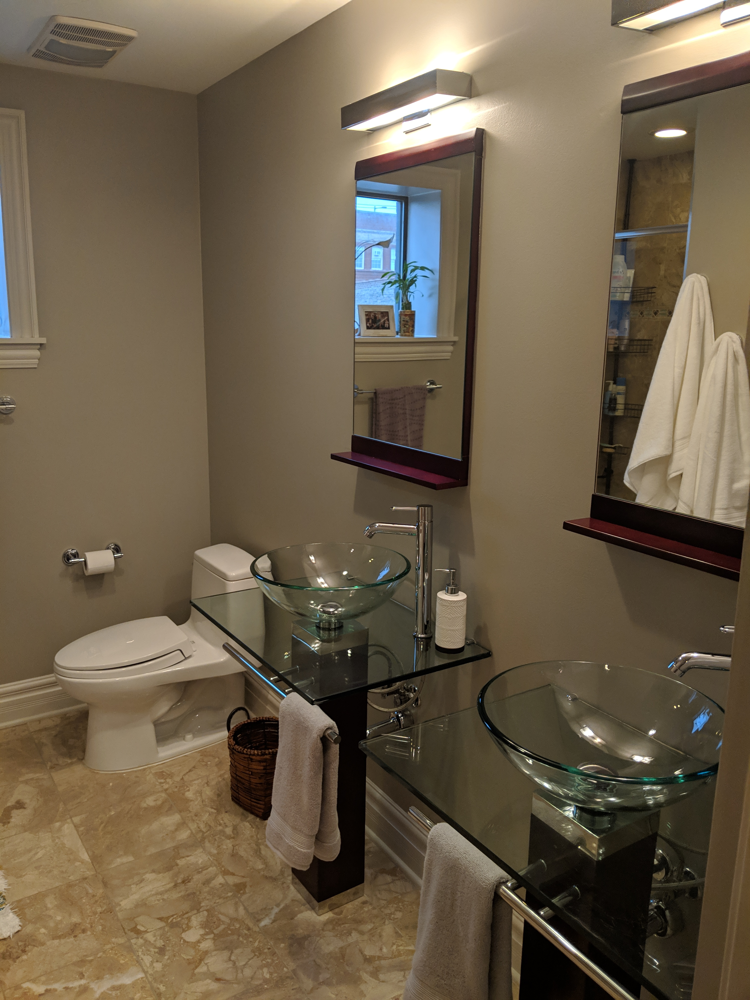
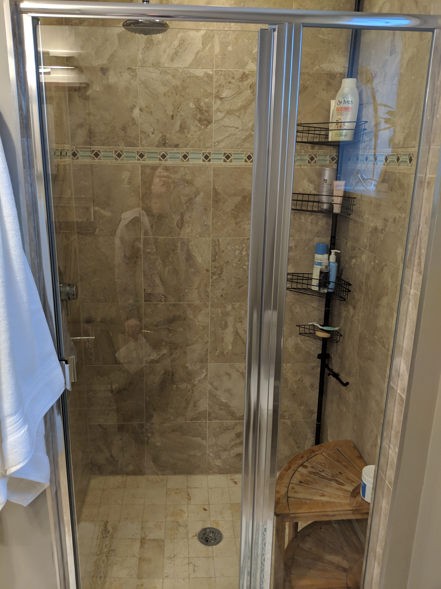
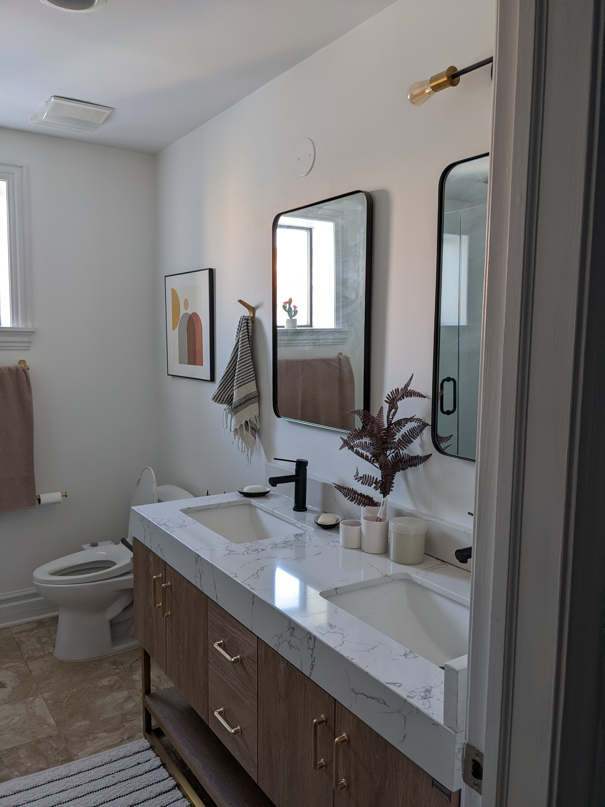
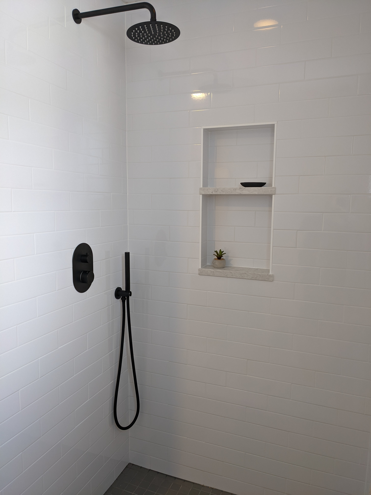
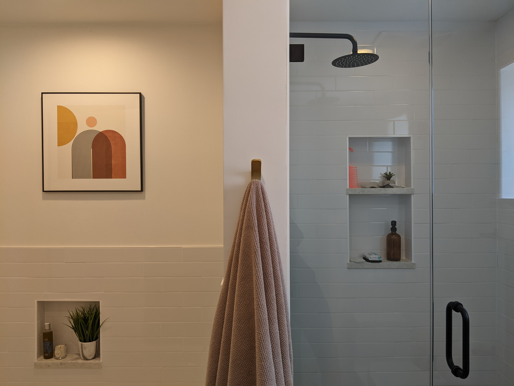

As Product Design Director at Glassdoor, I led the delivery of component design & development for Glassdoor's Design System 2.0. I developed and implemented a governance model across the organization, including streamlining adoption of and enabling contribution to the Design System by Product teams.
Before
 After
  